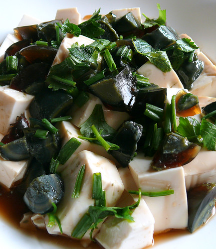

#17 - CHILLED TOFU WITH CENTURY EGG - 涼拌皮蛋豆腐
Century egg is duck egg that is preserved in clay, salt and rice husk for a few weeks to months. The egg whites turns to dark jelly like and the yolk is grey creamy and succulent. It is a Chinese delicacy that many foreigners do not have the
stomach for it.
Toon leaves is an unusual vegetable from Eastern China. It has a unique and pungent flavor. It is commonly found in the preserved form. It is ok to omit it from this recipe.

INGREDIENTS:
- 1 pack soft bean curd
- 1 Thousand-year old egg
- 3 cloves garlic
- Green onion
- 1 pc 香椿菜 (preserved toon leaves) optional
- ½ tsp salt
- ½ tsp chicken powder (optional)
- 1 tsp light soy sauce
- 1 tsp Sesame oil
- ½ tsp sugar
Directions:
- Peel the thousand-year old egg and cut into small pieces. Set aside.
- Chop香椿菜and soak in a bowl of water for at least 30 min. Rinse in water to remove the saltiness. Put it in a bowl.
- Peel and minced the garlic.
- In a small frying pan, heat 2TBSP oil, put in the minced garlic and fry until golden brown. Remove and set aside.
- Pour the remaining hot oil onto the toon, so it make a sizzling sound.
- Cut the green onion into small pieces.
- Cut tofu into ¾-inches pieces. Mix with salt and chicken powder.
- Put it in the microwave oven for 5 minutes.
- Drain off the excessive liquid and let cool.
- Mix soy sauce, sugar and sesame oil.
- Arrange tofu on the bottom, minced garlic, toon on the top. Garnish with chopped green onion.
- Pour the sauce on top, mix and serve.
(Serves 1 person)
Note:
- You may opt out the century egg and the preserved toon leaves, and even the fried minced garlic if you prefer. Just start the recipe from step 6.